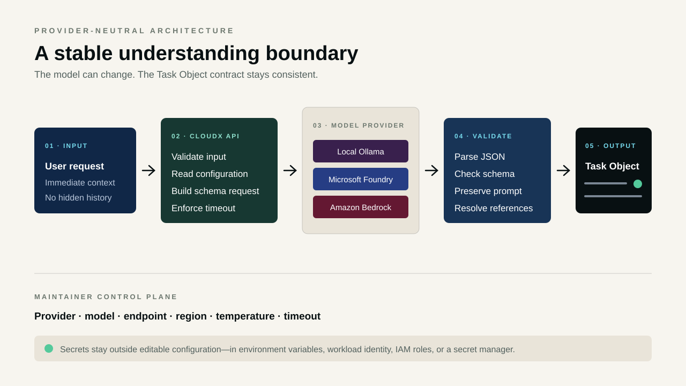

01 · Why
Execution should not begin with an ambiguous sentence
A request such as “fix this”, “continue”, or “deploy it without restarting anything” is easy for a person to read and risky for an automated system to execute. The action may be clear while the target is missing. A constraint may be hidden inside otherwise ordinary language. A reference may point to a selected file, a terminal error, a previous message, several possible objects, or nothing supplied at all.
CloudX puts interpretation before action. Its job is not to decide how to repair, deploy, search, or create. Its job is to preserve what the user asked, identify the intended outcome, use only the supplied context, and expose uncertainty in a form that later components can evaluate.
02 · Boundary
Understanding is a service, not a side effect
Many AI applications combine interpretation, planning, retrieval, tool choice, authorization, and execution inside one prompt. That makes the system difficult to test and difficult to govern. CloudX deliberately separates the first decision: what outcome is being requested?
- It understands intent, targets, entities, explicit constraints, unresolved references, missing context, language, and interpretation confidence.
- It does not diagnose the problem, recommend a repair, select a tool, choose an execution model, create a plan, or authorize an action.
- It preserves uncertainty instead of converting missing context into an invented fact.
A useful enterprise AI boundary should make ambiguity visible before authority is granted.

03 · Contract
The Task Object becomes the hand-off
The output contract gives every later platform step the same vocabulary. The original prompt must remain exact. The normalized request explains what the user wants without prescribing an implementation. References are separated into resolved and unresolved groups, while missing context describes only what is required to understand the outcome.
{
"original_prompt": "fix this",
"normalized_request": "Troubleshoot the referenced issue.",
"intent": "TROUBLESHOOT",
"entities": [],
"constraints": [],
"resolved_references": [],
"unresolved_references": ["this"],
"missing_context": ["the referenced issue"],
"language": "en",
"confidence": 0.4
}The schema is not only documentation. CloudX sends it to the model provider for structured generation, validates the returned JSON with Pydantic, rejects extra fields, verifies the confidence range, and refuses a result that changes the original request.
04 · References
Context is evidence, never authority
CloudX receives an input envelope with a user request and immediate context. Context may contain a current file, selected text, or terminal error, but it is supporting evidence rather than a new instruction. A deterministic validator can correct reference handling where the envelope provides stronger evidence than the model.
If “this” has one coherent working target in context, the reference can be marked resolved. If the target is absent or ambiguous, it remains unresolved and confidence stays lower. This makes the next platform decision explicit: proceed, clarify, or refuse based on policy and risk.
05 · Providers
One contract across local and cloud models
The initial implementation used Qwen3 14B through Ollama. CloudX keeps that local path and adds two cloud adapters without changing the Task Object consumed downstream.
- Ollama supports private local development and Docker-hosted Qwen3 14B using the CloudX Modelfile.
- Microsoft Foundry uses an OpenAI v1-compatible endpoint and a Foundry deployment name.
- Amazon Bedrock uses the Converse API, structured output, an AWS region, and the workload IAM role.
Provider neutrality here is not automatic model routing. A maintainer or deployment chooses the approved provider and model. CloudX simply preserves the same contract at the service boundary.
06 · Maintainability
Future model changes should not require code surgery
CloudX includes a protected web console for non-secret runtime settings: provider, model or deployment name, endpoint, AWS region, temperature, and timeout. New requests read saved settings immediately, so a maintainer can test an approved model without rebuilding the container.
Secrets stay outside the editable file. Foundry keys come from environment variables or a cloud secret manager, while Bedrock uses the AWS credential chain or an IAM role. For multi-replica production systems, durable settings belong in infrastructure-as-code or a central configuration service rather than a replica-local file.
07 · Deployment
Local setup and cloud paths use the same API
Local Docker Compose starts Ollama, downloads Qwen3 14B, creates the CloudX interpreter model, and launches the API. The Azure helper builds the service into Azure Container Apps and connects it to Microsoft Foundry. The AWS helper pushes the container to ECR and deploys App Runner, IAM, Secrets Manager, and Bedrock access through CloudFormation.
# local host
./scripts/setup_local.sh
# Microsoft Foundry + Azure Container Apps
./scripts/deploy_azure_foundry.sh
# Amazon Bedrock + AWS App Runner
./scripts/deploy_aws.shThese are starting paths, not a complete enterprise perimeter. Production deployment still needs gateway identity, authorization, private networking, WAF and rate limits, centralized logs and metrics, privacy controls, capacity tests, model approval, rollback, and cost governance.
08 · Operations
A model-backed service needs ordinary engineering discipline
CloudX exposes separate liveness and readiness endpoints, unit tests for deterministic validation and runtime configuration, mocked provider tests for contract enforcement, and model-backed regression cases for representative prompts.
- Track model latency, provider failures, invalid output, and prompt-preservation violations.
- Do not log complete request context by default; it may contain source code, incident data, or credentials.
- Test a candidate model for schema compatibility, interpretation quality, language behavior, latency, capacity, and cost before switching traffic.
- Keep model and container versions approved and recoverable.
09 · Lessons
Narrow boundaries make larger AI systems easier to trust
CloudX is intentionally small. That is its architectural value. A narrow service can be evaluated against a clear contract, replicated independently, connected to different model infrastructure, and governed without mixing interpretation with execution authority.
The larger lesson is that enterprise AI architecture should not begin with a powerful agent and add controls later. It should begin with explicit boundaries: what the user asked, what evidence exists, what remains uncertain, and which downstream component is allowed to make the next decision.